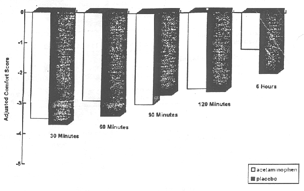

THE CIRCUMCISION REFERENCE LIBRARY
Objective. Recognizing the concerns about the use of local anesthesia in neonatal circumcision, a painful procedure usually performed without analgesia or anesthesia, we undertook a study of acetaminophen for pain management of this procedure.
Design. A prospective, randomized, double blind, placebo-controlled, clinical trial of acetaminophen analgesia in 44 healthy full term neonates undergoing circumcision was conducted. Beginning two hours before Gomco circumcision, neonates received either acetaminophen (15 mg/kg per dose, 0.15 mL/kg per dose) or placebo (0.15 mL/kg per dose) every six hours for 24 hours. Neonates were monitored intraoperatively for changes in heart rate, respiratory rate, and crying time. Postoperative pain was assessed at 30, 60, 90, 120, 360 minutes and 24 hours using a standardized postoperative comfort scoring system. Feeding behavior was also assessed before and after circumcision by nursing observation.
Results. Neonates in both groups showed significant increases in heart rate, respiratory rate, and crying during circumcision with no clinically significant differences between the groups. Postoperative comfort scores showed no significant differences between the groups until the 360-minute postoperative assessment, at which time the acetaminophen group had significantly improved scores. (P<.05). Feeding behavior deteriorated in breast- and bottle-fed infants in both groups, and acetaminophen did not seem to influence this deterioration.
Conclusions. This study confirms that circumcision of the newborn causes severe and persistent pain. Acetaminophen was not found to ameliorate either the intra-operative or the immediate postoperative pain of circumcision, although it seems that it may provide some benefit after the postoperative period. Pediatrics 1994;93:641-646; neonatal circumcision, acetaminophen.
Neonatal circumcision is the most common surgical procedure performed on males in the United States.1,2 As many as 86% of male neonates undergo this operation.3 It is unlikely that the frequency of this operation will decrease in the near future as the American Academy of Pediatrics has acknowledged that it has possible benefits.4 Although there is clear neurophysiologic and clinical evidence that neonates are capable of mature pain perception, even at relatively immature gestational ages,5 neonatal circumcision is usually performed without analgesia or anesthesia.6-11 Dorsal penile nerve block has been shown to provide anesthesia and analgesia,9,11,12 but it is not widely used due to concerns of sufficient safety,4,10 the additional time required to perform the block and, the continued belief that the pain of circumcision is insignificant. The American Academy of Pediatrics supports the use of anesthetics and analgesics in neonates and in its statement on neonatal anesthesia recommends that "the decision to withhold such medication should be based on the same medical criteria used for older patients."13
Recognizing the concerns about the use of local anesthesia in neonatal circumcision, we undertook a study of acetaminophen for pain management of this procedure. Acetaminophen is used extensively for relief of mild to moderate pain after minor surgery, has a broad margin of safety14 and is metabolized and excreted efficiently by newborns.15-17 To test the hypothesis that acetaminophen alleviates intraoperative and postoperative pain in neonatal circumcision, a prospective, randomized, double-blind, placebo-controlled, clinical trial of acetaminophen analgesia in healthy full term neonates undergoing circumcision was conducted.
All male neonates who met the study criteria defined below and who were delivered by staff obstetrical service of Rochester General Hospital from July 1992 to April 1993 were potentially eligible to participate in the study. Rochester General Hospital is a 526-bed community hospital affiliated with the University of Rochester School of Medicine and Dentistry with approximately 2500 deliveries per year. Parents requesting circumcision of healthy, appropriate for gestational age, full-term male newborns were asked to participate, and informed consent obtained for study participation. Full term was defined as 37 to 42 weeks gestation. Further eligibility criteria were (1) Apgar scores >7 at 1 and 5 minutes; (2) absence of any chronic or infectious disease process; (3) no history of maternal illegal drug use or alcohol use; (4) absence of any other contraindication to circumcision, such as hypospadias, epispadias, or cordee of the penis; and (5) no family history of a bleeding disorder. The study protocol and consent form were approved by the hospital's Clinical Investigation Committee.
Protocol and Data CollectionUsing a computer generated random number list, neonates were randomized to either an acetaminophen or placebo group. Twenty-one infants were randomized to the placebo group, and 23 to the acetaminophen group. The acetaminophen group received acetaminophen infant drops (Tylenol infant drops, McNeil Consumer Products), 15mg/kg per dose (0.15mL/kg per dose) every 6 hours for 24 hours (or until the neonate was discharged if this occurred before 24 hours), starting 2 hours preoperatively. Neonates in the placebo group were treated for an identical period but received 0.15 mL/kg per dose of a placebo solution, colored and saccharin-sweetened to resemble the acetaminophen drops. Five single doses of either placebo or acetaminophen were dispensed to the hospital's mother baby unit for each infant. Medications were dispensed in nursing bottles containing individual prediluted doses ready for administration to the infant. Study medications for both groups were prediluted by pharmacy personnel with 4mL of sterile water. After administration of the acetaminophen or placebo, 4mL of sterile water were placed into the nursing bottle, swirled to dissolve any residual medication and given to the neonate. All nurses and physicians involved in the study were blinded to the group assignments.
All circumcisions were performed in a quiet room specifically designated for circumcision procedures. All neonates were treated identically to the fullest possible extent. Circumcisions were performed between 6:30 AM and 8:00 AM to allow one investigator to do all postoperative assessments and to guarantee relatively uniform routine care experiences for the neonates before evaluation. Neonates had received nothing by mouth for a minimum of 2 hours before circumcision, and not neonates were longer than 3 hours without feeding before the procedure. All neonates had uneventful newborn nursery courses and were at least 24 hours old at the time of circumcision.
Intraoperatively, pain was assessed using crying time, heart rate changes, and respiratory changes. Heart rate was counted by a nurse via cardiac auscultation. Respiratory rate was determined by visual observation by a second nurse. heart rates and respiratory rates were assessed every 30 seconds beginning with the 3-minute preoperative observation and extending through the 3-minute postoperative observation. Crying time was assessed by the same investigator (C.R.H.) for all neonates and was determined using stopwatch measurements of crying vocalizations during each stage of the procedure. Pacifiers were offered to all neonates during the procedures.
Neonates were restrained on a circumcision board for 3 minutes before the surgical procedure to assess baseline measurements of crying time, heart rate and respiratory rate. All circumcisions were performed by the same physician (F.M.H.) using the same Gomco clamp technique in all neonates. For purposes of data interpretation, the operation was divided into the following stages: (1) 3 minutes baseline with limbs restrained; (2) cleansing of genital area; (3) dissection and lysis of adhesions; (4) Gomco clamp placement; (5) foreskin excision; (6) Gomco clamp removal and dressing placement; and (7) 3 minute postoperative period on the circumcision board without restraint. Mean heart rates and respiratory rates were calculated for each of these stages, as were percents of time spent in crying.
The Postoperative Comfort Score described by Attia et al16 (Table 1) which has previously been used in the assessment of postoperative pain in infancy,19 was utilized to assess postoperative pain. This score assesses 10 infant behaviors, each of which is scored 0, 1, or 2, resulting in possible scores from 0 to 20. The lower the score the more uncomfortable the infant. Each neonate was scored in the immediate preoperative period, and postoperatively at 30, 60, 90, 120, and 360 minutes. Those neonates who were hospitalized long enough to allow for additional postoperative scoring at 24 and 48 hours were also assessed at those times. All comfort scores were obtained by the same physician (C.R.H.). Before scoring, the state of the neonate (quiet/awake, fussy, or sleeping) was recorded. The amount of time since the neonate was last fed and any blood drawing or other painful procedure (eg, immunization) that had occurred were also recorded.
Two of the authors (C.M.H. and F.M.H.), both blinded to infant's circumcision status, performed a pilot test of the Postoperative Comfort Score in a group of 55 well, full-term newborns, 15 of whom were postcircumcision. Intraobserver reliability for this instrument was r=.90, and interobserver reliability was r=.85. A comfort score <16 from <1 hour to 70 hours postcircumcision identified neonates who had undergone circumcision with a positive predictive value of 85% sensitivity and 100% specificity those neonates who were <24 hours postcircumcision. Interobserver reliability was reverified (r > .90) in the latter half of the current study in a subgroup of 13 neonates.
Feeding behavior was evaluated before and after circumcision. In accord with standard nursing protocol at this hospital, nurses record breastfeeding behavior or formula intake each time an infant feeds. For the purposes of this study, preoperative feeding behavior was defined as follows for breast-fed neonates: (1) breastfeeding satisfactory, if by nursing observation the neonate was judged to have breastfed well for the two feedings before circumcision; and breast-feeding unsatisfactory, if by nursing observation the neonate was judged to have fed poorly on either of two breast-feedings before circumcision.
All neonates were taken to their mothers for feeding immediately after circumcision. If, in postoperative feedings, a neonate who was in the satisfactory category was judged to have fed poorly in two breast feeding attempts, or if the neonate refused to be breast fed on two attempts, then breast feeding was judged to have deteriorated post operatively. If after two attempts at breast-feeding the neonate required formula supplementation (eg, the neonate was symptomatic with a blood glucose <50) or the mother chose to feed the infant formula, breast-feeding was also judged to have deteriorated. If a neonate who had breast-fed poorly preoperatively fed well in postoperative feedings, breast-feeding behavior was judged to have improved.
Formula intakes of bottle-fed neonates for the two feedings before circumcision were averaged. This average was recorded as the baseline formula intake for the neonate. If on the first post-operative feeding the neonate consumed <50% of the preoperative volume of formula, feeding behavior was judged to have worsened.
Power calculations base on the results of the pilot test of the Postoperative Comfort Score indicated that a group size of 18 neonates in each of the two test groups would allow detection of a 50% improvement in Postoperative Comfort Scores with 80% power and an alpha of .05 in a one-tailed analysis.
TABLE 1. Postoperative Comfort ScoreThe following chart reads as follows: Row 1: Assessment Row 2: Score: 0 Row 3: Score: 1 Row 4: Score: 2 Sleep during preceding hour None Short naps between 5 and 10 min each Longer naps, >10 min each Facial expression of pain Marked, constant Less marked, intermittent Calm, relaxed Quality of cry Screaming, painful, high pitched Modulated, can be distracted by normal sound No cry Consolability None after 2 min Quiet after 1 min of effort Calm before 1 min of effort Sociability, eye contact, response to voice, smile, real interest in face Absent Difficult to obtain Easy and prolonged Sucking Absence or disorganized suck Intermittent suck (3 or 4) and stops with crying Strong, rhythmic pacifying effect Spontaneous excitability and responsiveness to ambient stimulation Tremulous, clonic movements, spontaneous moro reflexes Excessive reactivity (to any stimulation) Normal Spontaneous motor activity Thrashing around, incessant agitation Moderate agitation Normal Constant and excessive flexion of fingers and toes Very pronounced, marked, and constant Less marked, intermittent Absent Global evaluation of tone Strong hypertonicity Moderate hypertonicity Normal for age
Data Analysis
Data analysis was performed using EPI Info, Version 5 (Centers for Disease Control Shareware) and SPSS-PC statistical programs. Statistical comparisons were performed using the Student's τ-test for normally distributed continuous data, and The Wilcoxon two sample test for nonnormally distributed data. Categorical variables were tested for differences by χ2 statistics, and 95% confidence intervals for proportions were calculated to examine the variance of the point estimates. Fisher's exact tests were also used whenever a cell size was <5. Differences between groups for Post Operative Comfort Scores were analyzed using the Student's τ-test and analysis of variance techniques. Analysis of variance techniques tested for differences between the groups with the preceeding comfort scores treated as a covariate.
Comparisons between groups were also performed for all outcome measures accounting for rates obtained in preoperative observations. Preoperative values were subtracted from subsequent measures of a particular pain measure to produce adjusted values. Appropriate statistical analysis was then performed on these adjusted values.
RESULTS
There was no significant differences between the study groups for birth rate, race, maternal age, gestational age, maternal smoking during pregnancy, method of delivery, maternal use of intravenous or intramuscular analgesics during labor, maternal use of local or epidural anesthesia during labor, Apgar scores at 1 and 5 minutes, method of infant feeding, age at circumcision, or time required for the procedure. Only the incidence of obstetric complications differed between the groups. Two neonates in the acetaminophen group were born to mothers with gestational diabetes (non-insulin dependent), and one was born to a mother with pregnancy induced hypertension, whereas there were no obstetric complications in the group receiving placebo. In all cases neonates were asymptomatic at birth with normal growth parameters. and uneventful newborn courses.
Table 2: Intraoperative Heart Rates, Respiratory Rates, and Crying Times During Neonatal CircumcisionLegend for Chart: A - B - Baseline C - Sterile Preparation D - Dissection E - Clamp On F - Excision G - Clamp Off H - Recovery A B C D E F G H Heart rate (beats/min) Acetaminophen 132.4 +/- 14.5 138.3 +/- 14.4 155.3 +/- 20.5 162.0 +/- 21.8 141.0 +/- 23.0 156.8 +/- 20.0 161.1 +/- 21.9 Placebo 138.9 +/- 21.0 141.8 +/- 15.7 149.4 +/- 19.6 141.0 +/- 20.2 139.9 +/- 17.4 140.0 +/- 22.1 135.7 +/- 17.6 Respiratory rate (breaths/min) Acetaminophen 48.9 +/- 10.4 43.1 +/- 13.4 48.5 +/- 12.5 55.1 +/- 10.5 51.0 +/- 22.5 53.4 +/- 14.8 57.5 +/- 15.7 Placebo 55.2 +/- 14.2 59.9 +/- 13.3 53.6 +/- 16.9 61.6 +/- 12.8 67.8 +/- 19.3 53.3 +/- 19.4 67.6 +/- 16.9 Crying time (% time) Acetaminophen 0.15 +/- 0.27 0.56 +/- 0.30 0.83 +/- 0.15 0.79 +/- 0.27 0.66 +/- 0.27 0.85 +/- 0.12 0.80 +/- 0.24 Placebo 0.32 +/- 0.35 0.16 +/- 0.20[a] 0.63 +/- 0.21 0.32 +/- 0.27 0.35 +/- 0.29[a] 0.68 +/- 0.30 0.39 +/- 0.34 a P value < .05.
There were no statistically significant differences in unadjusted heart rate or respiratory rate. (Table 2) between the acetaminophen and placebo groups at any stage of the circumcision procedure. Neonates in the placebo group cried significantly more than those in the acetaminophen group during foreskin removal (Table 2, P<.05). These differences, however, were not evident when crying time was adjusted for baseline crying time (Table 3). The analysis of adjusted mean heart rates showed that the acetaminophen group had significantly greater changes in heart rate during the clamp removal and recovery periods of the procedure (P<.05 for each of these stages).
Table 3 Changes in Intraoperative Heart Rates, Respiratory Rates, and Crying Times During Neonatal CircumcisionAdjusted for Baseline Values Legend for Chart: A - B - Sterile Preparation C - Dissection D - Clamp On E - Excision F - Clamp Off G - Recovery A B C D E F G Heart rate (beats/min) Acetaminophen 5.9 +/- 13.9 22.9 +/- 18.5 29.6 +/- 21.8 9.4 +/- 18.8 17.0 +/- 21.4[a] 8.6 +/- 20.4[a] Placebo 2.0 +/- 14.4 17.8 +/- 14.9 22.3 +/- 19.4 1.0 +/- 17.9 1.2 +/- 23.2[a] -3.2 +/- 18.5[a] Respiratory rate (breaths/min) Acetaminophen -5.8 +/- 14.0 -0.4 +/- 13.1 6.2 +/- 10.3 11.0 +/- 8.2 4.7 +/- 13.8 12.7 +/- 10.2 Placebo -4.2 +/- 18.4 -1.7 +/- 13.0 2.0 +/- 10.3 12.5 +/- 16.1 -2.0 +/- 15.2 12.7 +/- 10.2 Crying time (% time) Acetaminophen 0.42 +/- 0.30 0.68 +/- 0.27 0.64 +/- 0.34 0.03 +/- 0.26 0.49 +/- 0.29 0.18 +/- 0.25 Placebo 0.34 +/- 0.26 0.52 +/- 0.33 0.49 +/- 0.46 0.03 +/- 0.28 0.35 +/- 0.31 0.08 +/- 0.21 a P value < .05.
TABLE 4. Mean Preoperative and Postoperative Comfort ScoresLegend for Chart: A - B - Preoperative C - 30 min D - 60 min E - 90 min F - 120 min G - 6 h H - 24 h A B C D E F G H Acetaminophen 18.4 +/- 1.3 14.9 +/- 2.0 15.5 +/- 2.6 15.0 +/- 1.8 15.9 +/- 2.0 17.1 +/- 1.6[a] 16.7 +/- 3.0[b] Placebo 18.4 +/- 1.5 14.7 +/- 2.5 15.0 +/- 3.0 15.5 +/- 2.0 15.8 +/- 2.2 16.3 +/- 2.3[a] 17.0 +/- 1.9[b] Adjusted for preoperative value Acetaminophen -- -3.5 -+/- 2.2 -2.9 +/- 3.1 -3.0 +/- 2.1 -2.5 +/- 2.5 -1.2+/-2.0[a] -- Placebo -- -3.7 +/- 2.6 -3.4 +/- 2.8 -2.7 +/- 2.0 -2.6 +/- 2.5 -2.0 +/- 2.8[a] -- a P value < .05. b Acetaminophen, n = 6; placebo, n = 5.
There were no significant differences between the groups at any designated postoperative pain assessment for the behavioral state of the neonates before scoring, time since last feeding, or for the numbers of the painful procedures (eg, blood drawing or immunization) which occurred between preoperative scores and the 30-, 60-, 90-, 120-minute and 6-hour postoperative comfort scores in both groups. When preoperative and postoperative comfort scores were compared, significant changes occurred in 9 of 10 and 8 of 10 components of the comfort score in the acetaminophen and placebo groups, respectively.
The t-test comparisons of comfort scores, adjusted and unadjusted for preoperative values, revealed no significant differences between the groups at any of the determinations (Figure and Table 4). Reanalysis of the data, however, via analysis of variance, with the previous comfort score treated as a co-variate, demonstrated that the acetaminophen group was significantly more comfortable than the placebo group at the 6-hour postoperative score (P<.05). The 6 hour score occurred 2 hours after a dose of acetaminophen and at the time of maximal effect of the analgesic.15,16 There were no significant differences between the groups for comfort scores at any other postoperative time using this analysis.
Preoperatively, all neonates fed well. Neonate feeding behavior after circumcision deteriorated in neonates in both groups. Of those breastfed, 2 of 11 (18%) in the acetaminophen group and 3 of 8 (37%) in the placebo group either were judged to have breast-fed poorly or required formula feedings after circumcision. Of neonates who were formula-fed, 4 of 12 (33%) in the acetaminophen group and 2 of 13 (15%) in the placebo group fed poorly after circumcision. Acetaminophen did not significantly influence feeding changes for either breast-fed or formula-fed neonates.

Figure. Mean Adjusted postoperative comfort scores after neonatal circumcision: a comparision of acetaminophen (n=23) and placebo (n=21) analgesia.
Numerous studies have shown that circumcision causes severe intraoperative pain as measured by changes in crying,8 heart rate, respiratory rate, transcutaneous PO2, 12,20 and cortisol levels.9 Adequate anesthesia such as that provided by local anesthesia with lidocaine or dorsal penile nerve block has been shown to ameliorate changes in each of these parameters.9,12,21-23 Additionally, simple interventions like sucrose-flavored pacifiers have been shown to reduce crying time.24 In the current study the observed changes in intraoperative heart rate respiratory rate, and crying times were consistent with severe intraoperative pain, and no clinically relevant differences between the study groups for any of the intraoperative pain measures were observed. Although differences were observed between groups for adjusted mean heart rates in the final two stages of the circumcision procedure, they were unexpected because they occurred during the least invasive portions of the procedure, contrasted to all other outcome procedures, were not believed to be clinically relevant, and may have been the result of analysis of multiple measures. Acetaminophen, an analgesic of only mild to moderate potency, this seems to be an ineffective analgesic for the management of intraoperative pain associated with circumcision in the newborn.
Both groups of neonates showed significant deterioration in their comfort scores at all postoperative assessments. Although the number of neonates remaining in the hospital for the 24-hour assessment was small, postoperative scores had not returned to preoperative values. Other studies have documented changes in the Brazelton Neonatal Behavior Assessment secondary to circumcision that have persisted for at least 24 hours.6,11 The overall deterioration in comfort scores observed in this study is consistent with those observations.
The results of this study also suggest that acetaminophen is ineffective for pain management in the immediate postoperative period (ie, the first 2 hours postcircumcision). Clinical experience with circumcision pain in older children validates this conclusion as regional anesthesia, potent non-steroidal drugs, and narcotic analgesics are often used for postoperative pain control for circumcision outside the neonatal period.25-27
There was significant improvement, however, in the group of neonates who received acetaminophen 6 hours postoperatively. It thus seems that acetaminophen may provide some analgesia in circumcised neonates after the immediate postoperative period. Due to the early discharge of neonates, the number of postoperative comfort scores at 24 hours was insufficient for statistical analysis, and we were unable to evaluate acetaminophen effects after 6 hours.
One probable explanation for the observed failure of acetaminophen to control pain in the immediate postoperative period is that the pain of circumcision is too severe to be controlled by a mild analgesic like acetaminophen. Thus, even though acetaminophen is simple and safe to administer to newborns, it may not be indicated for the treatment of pain of circumcision in the immediate postoperative period.
Subtherapeutic levels of acetaminophen might also explain inadequate postoperative analgesia, as acetaminophen levels were not monitored. Pharmacokinetic studies have been conducted in neonates, however, and dosages similar to those used in older children are recommended for use in neonates. These same studies indicate that drug absorption and half-life may be prolonged in neonates, but that syrup forms of acetaminophen improve drug absorption. Thus, an every 6-hour dosage schedule was chosen for this study.16,28
Another possible explanation for the failure to demonstrate immediate postoperative effectiveness of acetaminophen is that the measure of pain used were not sufficiently sensitive to detect differences in pain levels. However, results from the pilot series showed that the Postoperative Comfort store was quite effective in discriminating circumcised neonates from noncircumcised neonates; and as already stated, other studies have used changes in similar parameters to assess the pain associated with circumcision and its control with potent analgesics.18,19 Furthermore, the observed sharp decrease followed by a gradual increase of the score postcircumcision supports the use of this instrument for evaluating neonatal pain.
The observed deterioration in postoperative feeding behavior has been documented by other investigators.29 Infants feed less frequently and are less available for interaction after circumcision. Subdued, less interactive behavior has been documented frequently and are less available for interaction after circumcision. 6,11,30 In this study, acetaminophen seemed to have no effect on this deterioration. Because most hospital discharges occurred 7 to 10 hours after circumcision, the data are inadequate to assess the duration of the effects on feeding. Neonatal circumcision are often performed on the day of discharge with many neonates leaving the hospital 3 to 6 hours postoperatively. Thus the observed deterioration in ability to breast-feed may potentially contribute to breast feeding failure. Furthermore some neonates in this study required formula supplementation because of maternal frustration with attempts at breast-feeding, or because the neonate was judged unable to breast-feed postoperatively. This finding is disconcerting because early formula supplementation is associated with decreased breast-feeding duration.30,31 Because, the vast majority of male infants in the United States undergo unanesthetized circumcision, this preliminary observation deserves further study.
In summary, this study confirmed that circumcision of the newborn causes severe and persistent pain. Acetaminophen was not found to ameliorate the the intraoperative or the immediate postoperative pain of circumcision, although it may provide some benefit after the immediate postoperative period. Given the large numbers of newborns who undergo this painful surgical procedure, it is imperative that safe and easily administered methods of anesthesia be found and utilized.
This work was supported in part, by grant ID28PE50005-01 from the Bureau of Health Professions.
The authors would like to thank Klaus Roghmann, PhD, for his thoughtful comments, Neil Schecter, MD, for his help in selecting a method of assessing postoperative pain, and Marilyn Richards, RNC and Marifran Cooper, RNC, MSN, for their assistance during this study.